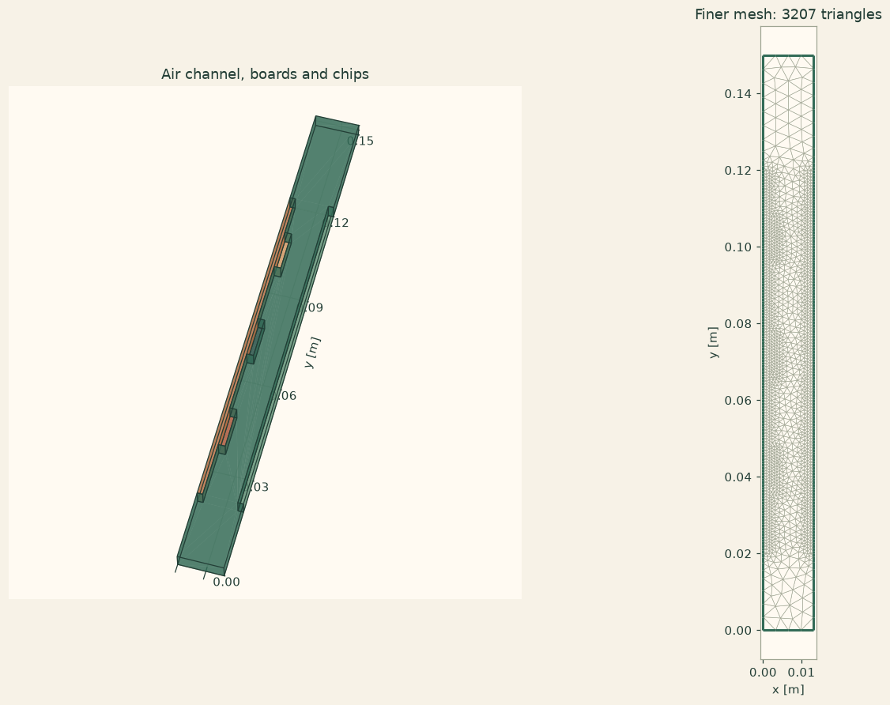

Docs › Examples › Free-convection cooling of vertical circuit boards
Free convection · 2D
Free-convection cooling of vertical circuit boards
Vertical circuit boards in a rack cooled without a fan: the chips heat their board and the air in the channel between two boards, the air rises and draws cool air in from below.
Run locally with OneSimulation. The example downloads are free. Running them requires an activated runtime. Runtime Alpha 0.2.1a7 · CPython 3.13 on macOS (Apple Silicon), Ubuntu 22.04 (x86-64), and Windows x64. Installation and activation · View pilot plans. Scope of the reference checks.

What it computes
OneSimulation solves the steady Navier-Stokes equations (Taylor-Hood) in the air and one heat balance (quadratic elements) in air, glass-epoxy boards and chips together, read from STEP parts and meshed as one conforming cross-section with embedded regions; the flow lives on the air cells, the velocity is carried into the heat balance and is zero in the solids. Buoyancy and convection are coupled both ways and solved with one monolithic Newton method, with open inlet and outlet (backflow-controlled traction) and the chip power as a volume source. The script that builds the STEP files comes with the notebook.
What it checks
The enthalpy carried out of the channel matches the 9 W/m chip power within 0.01 %, the buoyancy draws 0.72 l/(s m) through the 10 mm gap, the conducting board spreads the chip heat so that the top chip runs 22.5 K above ambient, 3.5 % above the Bar-Cohen-Rohsenow channel correlation for uniform flux, Newton converges in 6 steps on both meshes, and the coarser mesh changes the chip temperatures by 0.02 K.
Geometry
The notebook starts at the import of the CAD files vertical_circuit_boards_free_convection.step, vertical_circuit_boards_free_convection_air.step, vertical_circuit_boards_free_convection_board_left.step, vertical_circuit_boards_free_convection_board_right.step, vertical_circuit_boards_free_convection_chip_1.step, vertical_circuit_boards_free_convection_chip_2.step, vertical_circuit_boards_free_convection_chip_3.step: STEP (AP242), readable by any CAD program, with the names of the faces that the boundary conditions use. Put them next to the notebook.

The geometry script
The script vertical_circuit_boards_free_convection_geometry.py builds the geometry with the CAD objects of OneSimulation and writes the files. Change a dimension there, run it, and run the notebook again.
"""Geometry of the OneSimulation example "Free-convection cooling of vertical circuit boards".
Builds the cross-section region of one channel of a stack of vertical circuit boards with the CAD
objects of OneSimulation, as slabs 5 mm deep: two boards (1.6 mm thick, 100 mm high) 10 mm apart,
the left one carrying three chips (2 mm thick, 12 mm high) on the side facing the channel, and the
air in the channel and 20 mm below and 30 mm above the boards. Writes
- vertical_circuit_boards_free_convection_air.step: the air, the domain of the model, with the
groups inlet (bottom), outlet (top), sides and solids (every face touching a board or a chip),
- vertical_circuit_boards_free_convection_board_left.step, ..._board_right.step and
..._chip_1.step, ..._chip_2.step, ..._chip_3.step (from the bottom up): the boards and chips,
- vertical_circuit_boards_free_convection.step: the whole channel (air, boards and chips), the
domain of the heat transport, with the groups inlet, outlet and sides.
"""
from onesim.cad.d3 import Box
thickness, gap, board, below, above, depth = 1.6e-3, 10e-3, 0.1, 0.02, 0.03, 5e-3
chip_thickness, chip_height, chip_levels = 2e-3, 12e-3, (0.016, 0.046, 0.076)
slug = "vertical_circuit_boards_free_convection"
whole = Box(length=2 * thickness + gap, width=below + board + above, height=depth)
solids = {
"board_left": Box(
length=thickness, width=board, height=depth, origin=(0.0, below, 0.0)
),
"board_right": Box(
length=thickness,
width=board,
height=depth,
origin=(thickness + gap, below, 0.0),
),
**{
f"chip_{index}": Box(
length=chip_thickness,
width=chip_height,
height=depth,
origin=(thickness, below + level, 0.0),
)
for index, level in enumerate(chip_levels, start=1)
},
}
air = whole.named("box")
for name, solid in solids.items():
air = air - solid.named(name)
named = lambda *prefixes: air.select(faces=lambda face: face.id.startswith(prefixes))
air = air.grouped(
inlet=named("box.y_min"),
outlet=named("box.y_max"),
sides=named("box.x_min", "box.x_max"),
solids=named(*solids),
)
air.save(f"{slug}_air.step")
whole.grouped(
inlet=whole.boundaries.y_min,
outlet=whole.boundaries.y_max,
sides=whole.boundaries.x_min | whole.boundaries.x_max,
).save(f"{slug}.step")
for name, solid in solids.items():
solid.save(f"{slug}_{name}.step")The notebook
The complete notebook, cell by cell. Run it to produce the figures and the comparison printout.
Two vertical circuit boards (1.6 mm thick, 100 mm high) stand 10 mm apart in a rack. The left board carries three chips (2 mm thick, 12 mm high) on the side facing the channel; each chip produces 3 W per metre of board depth inside its volume. Without a fan the air (25 °C) is driven by buoyancy alone. The steady Boussinesq equations hold in the air,
and one heat balance \(\rho c_p\,\mathbf u\cdot\nabla T=\nabla\cdot(k\nabla T)+\dot q\) holds everywhere, with \(\mathbf u=0\) in the solids and the chip heat \(\dot q\) in the chips. Air at 25 °C: \(\rho=1.184\) kg/m³, \(\mu=1.849\cdot10^{-5}\) Pa s, \(k=0.02551\) W/(m K), \(c_p=1007\) J/(kg K), \(\beta=1/T_0\); boards of glass-fibre epoxy, \(k=0.3\) W/(m K); chip packages \(k=1\) W/(m K). The heat spreads from the chips into the board and leaves through all faces in the air. The outer faces of the boards face neighbouring channels of the same rack and take up no heat. The model includes 20 mm of air below and 30 mm above the boards, so that the air enters and leaves the channel freely.
The geometry comes from the CAD files vertical_circuit_boards_free_convection*.step, written by vertical_circuit_boards_free_convection_geometry.py with the CAD objects of OneSimulation: the whole channel (domain of the heat transport), the air (domain of the flow, with the faces of every board and chip named after them), and the boards and chips as parts of their own.
| boundary | flow | heat | |---|---|---| | inlet (bottom) | open, no traction | \(T=25\) °C | | outlet (top) | open, no traction (backflow damped) | no conduction | | sides | free slip | no flux | | board and chip faces in the air | no slip | continuous temperature and heat flux | | outer board faces | – | no flux |
Reference. In the steady state the 9 W/m of the chips leave with the air: the enthalpy flow through the top plus the heat conducted back through the inlet. For a vertical channel with one wall heated at a uniform flux \(q''\) and the other insulated, Bar-Cohen and Rohsenow give the wall temperature at the channel exit (F. P. Incropera et al., Fundamentals of Heat and Mass Transfer, Eq. 9.46 and Table 9.3),
with the gap \(S\), the board height \(L\) and the mean flux \(q''=9\,\mathrm{W/m}/L\). The conducting board spreads the chip heat along its height, much closer to the uniform flux of the correlation than chips on an insulating board.
import numpy as np
from onesim.cad.exchange import load
from onesim.materials import ThermalFluid, regionwise
from onesim.meshing import TriangularMesher, region_mesh
from onesim.numerics import Numerics
from onesim.numerics.coupled_systems import MonolithicStationaryCoupling
from onesim.numerics.fem import FiniteElement, GalerkinAdvection, Lagrange, TaylorHood
from onesim.numerics.field_transfer import FieldInterpolation
from onesim.numerics.linear import SparseDirect
from onesim.numerics.nonlinear import Newton
from onesim.physics.heat_transfer import (
BoussinesqBuoyancy,
ConvectiveHeatTransfer,
FixedTemperature,
HeatFlux,
)
from onesim.physics.hydrodynamics import (
BackflowTraction,
FreeSlipLaw,
IncompressibleNavierStokes,
NoSlipWall,
OpenBoundaryTraction,
WallShear,
)
from onesim.results.derived import derived_field
from onesim.simulation import Problem, Simulation
from onesim.simulation.field_connections import FieldCoupling
from onesim.simulation.initial_conditions import InitialValue
from onesim.visualization import plots, theme
theme.set()Geometry and meshes
Every part is cut at half depth. The whole channel is meshed with boards and chips as embedded regions, so that the triangles follow every interface (0.7 mm in boards and chips, growing to 3.5 mm in the open air; a second mesh is coarser by a factor 1.4). region_mesh takes the air cells out of it for the flow, with the face names of the air part.
slug = "vertical_circuit_boards_free_convection"
names = ("air", "board_left", "board_right", "chip_1", "chip_2", "chip_3")
cut = lambda part: part.section((0, 0, 1), origin=(0, 0, part.size[2] / 2))
channel = cut(load(f"{slug}.step"))
regions = {name: cut(load(f"{slug}_{name}.step")).named(name) for name in names}
air, faces = regions["air"], channel.boundaries
meshes = [
TriangularMesher(
target_size=2.5e-3 * scale,
embedded_regions=tuple(regions[name] for name in names[1:]),
grading=0.25,
region_sizes={name: 5e-4 * scale for name in names[1:]},
).generate(channel)
for scale in (2.0, 1.4)
]
air_meshes = [region_mesh(mesh, air) for mesh in meshes]
fig = plots.figure(1, 2, size=(12, 8))
plots.geometry(
[load(f"{slug}_{name}.step").named(name) for name in names],
labels=False,
camera=plots.Camera(elevation=60, azimuth=-75),
title="Air channel, boards and chips",
ax=fig[0],
)
plots.mesh(
meshes[-1],
groups=("all",),
legend=False,
title=f"Finer mesh: {meshes[-1].cell_count} triangles",
ax=fig[1],
)
plots.show()Model
The flow (Taylor-Hood elements) lives on the air, the heat transport (quadratic elements) on the whole channel, with region-wise conductivity and the chip heat as region-wise source. BoussinesqBuoyancy turns the temperature into the body force of the air; the air velocity carries the heat, and FieldInterpolation(outside=0.0) makes it zero in boards and chips, where the heat model meets no air. MonolithicStationaryCoupling solves flow and heat together with one Newton method whose Jacobian holds both coupling blocks; it starts from one sweep of the two solvers with the heat carried by an assumed uniform updraught of 5 cm/s. Inlet and outlet are open boundaries; BackflowTraction controls the energy of any air re-entering through them.
ambient, gravity, power = 298.15, 9.81, 3.0
chip_area = 2e-3 * 12e-3
properties = dict(
density=1.184,
dynamic_viscosity=1.849e-5,
specific_heat_capacity=1007.0,
thermal_expansion_coefficient=1 / ambient,
)
air_properties = ThermalFluid(thermal_conductivity=0.02551, **properties)
channel_properties = ThermalFluid(
thermal_conductivity=regionwise(
tuple((regions[name], 0.3) for name in ("board_left", "board_right"))
+ tuple((regions[f"chip_{index}"], 1.0) for index in (1, 2, 3)),
default=0.02551,
unit="W/m/K",
),
**properties,
)
flow = IncompressibleNavierStokes(domain=air.domain(), material=air_properties)
heat = ConvectiveHeatTransfer(
domain=channel.domain(),
material=channel_properties,
velocity=None,
heating=regionwise(
tuple((regions[f"chip_{index}"], power / chip_area) for index in (1, 2, 3)),
default=0.0,
unit="W/m^3",
),
)
problem = Problem(
name="Vertical circuit boards",
geometry=channel,
additional_geometries=(air,),
physics=(flow, heat),
boundary_conditions=(
OpenBoundaryTraction(
physics=flow,
boundary=air.boundaries.inlet | air.boundaries.outlet,
value=0.0,
law=BackflowTraction(),
),
WallShear(physics=flow, boundary=air.boundaries.sides, law=FreeSlipLaw()),
NoSlipWall(physics=flow, boundary=air.boundaries.solids),
FixedTemperature(physics=heat, boundary=faces.inlet, value=ambient),
HeatFlux(physics=heat, boundary=faces.outlet | faces.sides, value=0.0),
),
initial_conditions=(
InitialValue(heat.temperature, ambient),
InitialValue(flow.velocity, (0.0, 0.05)),
),
couplings=(
FieldCoupling(
source=heat.temperature,
target=flow.field("body_force"),
transfer=BoussinesqBuoyancy(
gravity=(0, -gravity), reference_temperature=ambient
),
),
FieldCoupling(
source=flow.velocity,
target=heat.advecting_velocity,
transfer=FieldInterpolation(outside=0.0),
),
),
)
numerics = {
flow: Numerics(
spatial=FiniteElement(element=TaylorHood()),
initial_guess={flow.velocity: (0.0, 0.0)},
nonlinear_solver=Newton(
linear_solver=SparseDirect(),
absolute_tolerance=1e-12,
relative_tolerance=1e-9,
maximum_iterations=50,
),
),
heat: Numerics(
spatial=FiniteElement(
element=Lagrange(order=2), convection=GalerkinAdvection()
),
linear_solver=SparseDirect(),
),
}
results = [
Simulation(
problem=problem,
mesh={flow: air_mesh, heat: mesh},
numerics=numerics,
coupling_solver=MonolithicStationaryCoupling(
stationary_systems=(heat, flow),
nonlinear_solver=Newton(
linear_solver=SparseDirect(),
relative_tolerance=1e-8,
absolute_tolerance=1e-12,
maximum_iterations=30,
),
),
).solve_stationary()
for air_mesh, mesh in zip(air_meshes, meshes)
]Heat balance and temperatures
derived_field forms the enthalpy flux \(\rho c_p v\,(T-T_0)\) of the air, integrated over the outlet; a chip temperature is the largest value in the chip, the board temperature is read along its face towards the channel.
gap, height = 10e-3, 0.1
nu, alpha = (
air_properties.dynamic_viscosity / air_properties.density,
air_properties.thermal_conductivity
/ (air_properties.density * air_properties.specific_heat_capacity),
)
flux = 3 * power / height
rayleigh = (
gravity
* air_properties.thermal_expansion_coefficient
* flux
* gap**4
/ (air_properties.thermal_conductivity * alpha * nu)
* gap
/ height
)
exit_rise = (
flux
* gap
/ air_properties.thermal_conductivity
* np.sqrt(48 / rayleigh + 2.51 / rayleigh**0.4)
)
hottest = []
for name, mesh, result in zip(("coarser", "finer"), meshes, results):
temperature, velocity = result.field(heat.temperature), result.field(flow.velocity)
enthalpy = derived_field(
velocity,
lambda u, points, T=temperature: air_properties.density
* air_properties.specific_heat_capacity
* u[:, 1]
* (np.ravel(T.evaluate(points)) - ambient),
name="enthalpy_flux",
unit="W/m^2",
)
carried, back = enthalpy.integrate(
boundary=air.boundaries.outlet
).value, temperature.boundary_flux(faces.inlet)
inflow = velocity.integrate(
boundary=air.boundaries.inlet, normal_component=True
).value
hottest.append(
[
temperature.evaluate(
np.array(
[
[x, y]
for x in np.linspace(box[0][0], box[1][0], 9)
for y in np.linspace(box[0][1], box[1][1], 25)
]
)
).max()
- 273.15
for box in (regions[f"chip_{index}"].bounding_box for index in (1, 2, 3))
]
)
steps = result.result_set.solver_report["coupling"]["continuation"][-1][
"iterations"
]
print(f"{name} mesh ({mesh.cell_count} triangles, {steps} Newton steps)")
print(
f" chip power {3 * power:.3f} W/m; enthalpy through the outlet {carried:.4f} W/m, conducted back through the inlet "
f"{back:.4f} W/m; balance {100 * (carried + back - 3 * power) / (3 * power):+.3f} %"
)
print(
f" air drawn through the channel {-1e3 * inflow:.4f} l/(s m), mean speed in the gap {-1e3 * inflow / gap:.1f} mm/s, mixed outlet "
f"temperature rise {3 * power / (air_properties.density * air_properties.specific_heat_capacity * -inflow):.2f} K"
)
print(
" chip temperatures (bottom to top): "
+ ", ".join(f"{value:.2f} °C" for value in hottest[-1])
)
print(
f"\nRa*_S S/L = {rayleigh:.1f}; channel correlation: wall {exit_rise:.2f} K above ambient at the channel exit"
)
print(
f"top chip {hottest[-1][-1] - 25:.2f} K above ambient ({100 * ((hottest[-1][-1] - 25) / exit_rise - 1):+.1f} % from the correlation); "
f"change from the coarser mesh {hottest[-1][-1] - hottest[0][-1]:+.3f} K"
)Figure
Temperature in air, boards and chips (the heat spreads up and down the left board) and speed of the air, and the temperature along the channel faces of the left board (with its chips) and of the right board.
temperature, velocity = results[-1].field(heat.temperature), results[-1].field(
flow.velocity
)
(bx0, by0, _), (bx1, by1, _) = regions["board_left"].bounding_box
right_face = regions["board_right"].bounding_box[0][0]
along = np.linspace(by0, by1, 500)
fig = plots.figure(
layout=[["temperature", "speed", "profiles", "profiles"]], size=(15, 9)
)
plots.surface(
temperature,
component=lambda T, position: T - 273.15,
limits=(25.0, np.ceil(max(hottest[-1]))),
contours=12,
subdivisions=2,
label="T [°C]",
xlabel="x [m]",
ylabel="y [m]",
title="Temperature",
ax=fig["temperature"],
)
plots.surface(
velocity,
component=lambda u, position: 1e3 * np.linalg.norm(u, axis=1),
contours=8,
subdivisions=2,
label="speed [mm/s]",
xlabel="x [m]",
ylabel="y [m]",
title="Speed of the air",
ax=fig["speed"],
)
plots.line(
y={
"left board, channel face": (
temperature.evaluate(
np.column_stack((np.full_like(along, bx1 - 1e-7), along))
).ravel()
- 273.15,
1e3 * (along - by0),
),
"right board, channel face": (
temperature.evaluate(
np.column_stack((np.full_like(along, right_face + 1e-7), along))
).ravel()
- 273.15,
1e3 * (along - by0),
),
},
points={"correlation, channel exit": ([25.0 + exit_rise], [1e3 * (by1 - by0)])},
vlines={"ambient": 25.0},
xlabel="temperature [°C]",
ylabel="height along the board [mm]",
title="Temperature of the board faces towards the channel",
legend="lower right",
ax=fig["profiles"],
)
plots.show()Going further
Change the board spacing in vertical_circuit_boards_free_convection_geometry.py and look for the spacing with the coolest chips (too narrow chokes the flow, too wide wastes rack space); move the hottest chip to the bottom of the board; or impose an inflow at the inlet, as a fan would, to compare free and forced cooling; or give the boards a copper layer (a larger conductivity) and watch the chips cool down.